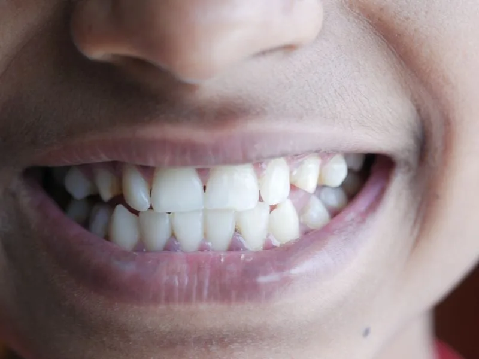
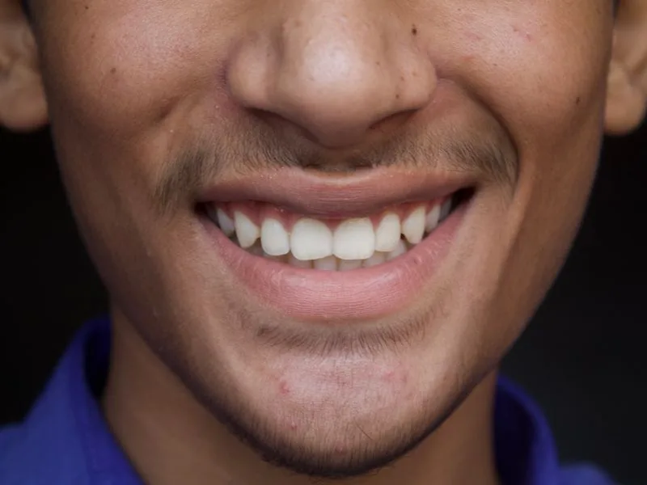

Quem confia o sorriso à Fukuoka
Relatos de pacientes sobre a experiência de atendimento na clínica.
Os depoimentos abaixo são ilustrativos e serão substituídos por relatos reais de pacientes, mediante autorização por escrito.
"O tempo que dedicaram para explicar cada etapa mudou minha relação com o dentista. Saí da primeira consulta entendendo exatamente o que seria feito e por quê."
"Atendimento preciso e discreto, do começo ao fim. A clínica tem uma serenidade que faz diferença para quem tem receio de tratamento odontológico."
"Procurava um lugar onde pudesse ser atendida em japonês. Encontrei isso e um cuidado técnico que me deixou segura em cada etapa."
"Me apresentaram mais de uma alternativa e explicaram o que cada uma implicava a longo prazo. Foi a primeira vez que senti que a decisão era minha."
"Trabalho em reuniões o dia inteiro e o tratamento não interferiu na rotina. O acompanhamento foi consistente do início ao fim."
"O pós-operatório foi mais tranquilo do que eu esperava, e a equipe acompanhou de perto nos primeiros dias."
Resultados de casos reais
Arraste o controle para comparar.
Imagens ilustrativas. Serão substituídas por casos reais tratados na clínica, mediante autorização dos pacientes.

